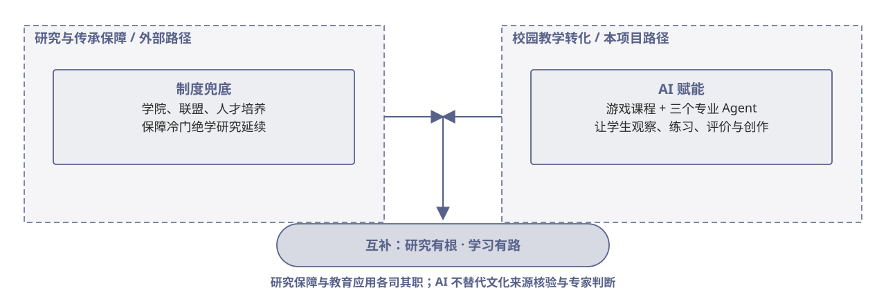

（四）创新性与独特视角创新点：制度兜底与 AI 赋能互补
《北京青年报》关注以学院、联盟和制度保障冷门绝学研究；我们面向校园美育，把真实文化资源转成游戏课程，再用专业 Agent 延伸评价与创作。两种路径各有职责，互为补充。

证据与状态 “AI 赋能”是本项目的教育实践方向，不替代学术研究、专家核验或制度保障；长期教学效果仍需严格研究。 报道来源 ↗
《北京青年报》关注以学院、联盟和制度保障冷门绝学研究；我们面向校园美育，把真实文化资源转成游戏课程，再用专业 Agent 延伸评价与创作。两种路径各有职责，互为补充。

证据与状态 “AI 赋能”是本项目的教育实践方向，不替代学术研究、专家核验或制度保障；长期教学效果仍需严格研究。 报道来源 ↗